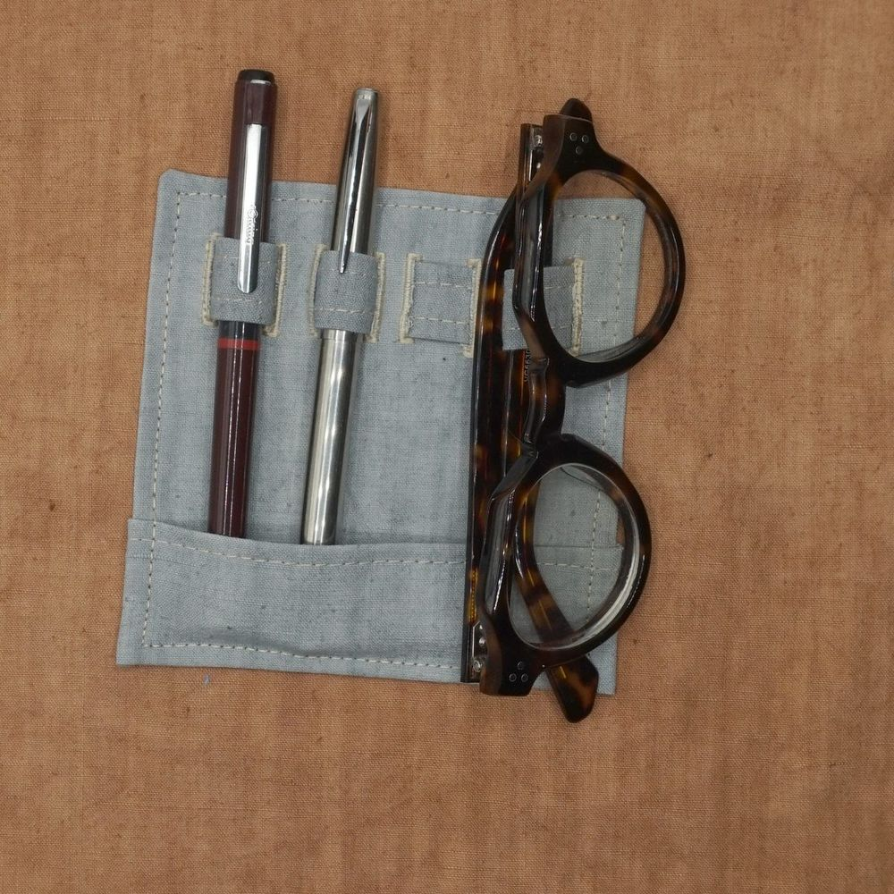
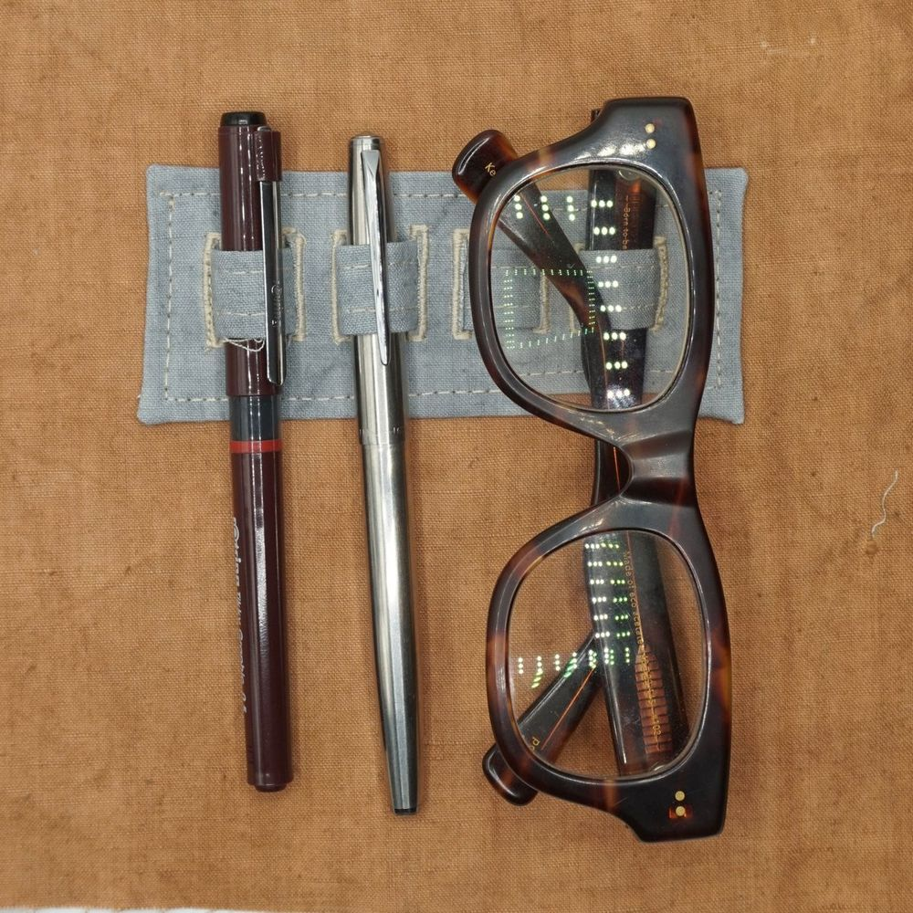
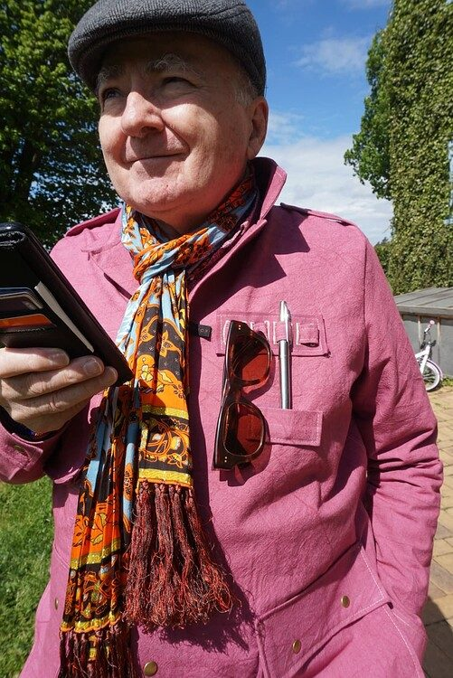
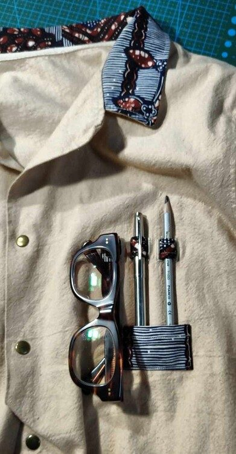

Cartouchière : porte-stylos et lunettes
Difficulté●●○○
Une création originale pensée pour mes sahariennes : une « reconversion » de la cartouchière des sahariennes militaires ou de chasse. Pratique, cette cartouchière est un support de stylos et d'une paire de lunettes. Elle s'applique sur la poitrine de la veste, à gauche, ou, pourquoi pas, sur une manche, à la place d'une poche de manche. Elle peut être classique, réalisée avec le tissu principal, ou fantaisie, avec des tissus qui attirent l'œil sur ce détail original.
Deux versions aux dimensions fixes, à télécharger en PDF A4 à l'échelle 1:1 : la cartouchière avec poche (12 × 12 cm) et la version simplifiée, sans poche (12 × 5 cm). Tout est calculé dans votre navigateur ; aucune de vos données ne m’est envoyée.


Cartouchière avec poche
Elle comprend la poche du bas, qui retient les stylos et les empêche de glisser. Dimensions finies : 12 × 12 cm.
| Pièce | Dimensions | Tissu |
|---|---|---|
| Principale | Tissu principal ou fantaisie | |
| Poche | Tissu principal ou fantaisie | |
| Ruban | Tissu principal ou fantaisie | |
| Thermocollant | Thermocollant (à repasser sur l'envers de la pièce Principale) |
Étalonnage d'impression
Conseil : faites d’abord un essai dans un tissu bon marché (un vieux drap, par exemple).
Le PDF d’une page contient toutes les pièces à l’échelle 1:1, sans découpage en feuilles A4, pour être projetées sur le tissu (par exemple avec Pattern Projector).
Cartouchière simplifiée
La même cartouchière sans poche. Dimensions finies : 12 × 5 cm. Mêmes étapes de couture que la version avec poche, sans la poche (voir le mode d'emploi plus bas).
| Pièce | Dimensions | Tissu |
|---|---|---|
| Principale | Tissu principal ou fantaisie | |
| Ruban | Tissu principal ou fantaisie | |
| Thermocollant | Thermocollant (à repasser sur l'envers de la pièce Principale) |
Étalonnage d'impression
Conseil : faites d’abord un essai dans un tissu bon marché (un vieux drap, par exemple).
Le PDF d’une page contient toutes les pièces à l’échelle 1:1, sans découpage en feuilles A4, pour être projetées sur le tissu (par exemple avec Pattern Projector).
Les 8 traits rouges de la pièce Principale sont des boutonnières : le ruban y passe pour retenir les stylos et la paire de lunettes. Les tirets bleus sont les lignes de repli. Il n'y a pas de marge de couture : le rempli de 1,5 cm en tient lieu.
Pour une impression ou une projection réussie, consultez Imprimer à la bonne taille.
Mode d'emploi illustré
La couture et l'assemblage en 10 étapes, avec photos : boutonnières, ruban, poche et surpiqûre.
Voir le mode d'emploi illustré
D'autres cartouchières


Vous avez réalisé ce modèle ? Montrer ma réalisation